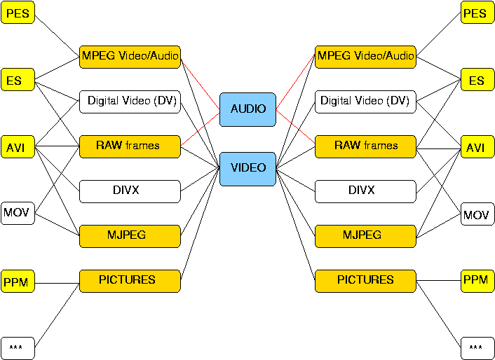

|
transcode
is a linux text-console utility for video stream processing,
running on a platform that supports shared libraries and threads.
Decoding and encoding is done by loading modules that are responsible
for feeding transcode with raw video/audio streams (import modules)
and encoding the frames (export modules). It supports elementary video
and audio frame transformations, including de-interlacing
or fast resizing of video frames and loading of external filters.
A number of modules are included to enable import of DVDs on-the-fly,
MPEG elementary (ES) or program streams (VOB), MPEG video,
Digital Video (DV),
YUV4MPEG streams, NuppelVideo file format and raw or compressed (pass-through) video frames
and export modules for writing DivX;-), OpenDivX, DivX 4.xx or
uncompressed AVI files with MPEG, AC3 (pass-through) or PCM audio.
Additional export modules to write single frames (PPM) or
YUV4MPEG streams are available, as well as an interface import module
to the avifile library.
It's modular concept is intended to provide flexibility and easy user
extensibility to include other video/audio codecs or file types.
A set of tools is included to demux (tcdemux), extract (tcextract) and decode
(tcdecode) the sources
into raw video/audio streams for import, probing (tcprobe) and scanning (tcscan) your sources and to enable post-processing
of AVI files, fixing AVI file header information (avifix), merging multiple files (avimerge) or splitting
large AVI files (avisplit) to fit on a CD.
transcode plug-in architecture overview:
transcode loads shared library modules that are responsible for feeding it with raw streams and encoding the frames.
- The import modules for audio/video decoding are loaded with
dlopen system call and are
responsible for starting the video and audio streams (directly or via the
popen system call) and have a single function interface to the main program.
The import is handled by a thread that buffers the video/audio frames.
- The main program transcode currently performs
a number of video/audio frame manipulations (in
this order) or allows simple pass-through of raw frame data:
Video:
- cut out arbitrary frame region before processing
- de-interlace video frame
- fast enlarging of video width/height by a
multiple of 8/16/32 rows/columns up to 1024x768
- fast reduction of video width/height by a multiple of 8/16/32 rows/columns
- high-quality resizing with different filtering
- cut out arbitrary frame region for encoding
- fast rescale (down-sample) video width/height by a power of 2
- flip video frame upside down
- mirror image of video frame
- swap red and blue bytes or chroma
components in video frame
- transform to b/w video frame
- apply gamma correction
- anti-alias video frame
- DVD subtitle overlay (plug-in)
Audio:
- swap byte order in audio stream
- change the volume of the audio stream
- re-sample audio stream (plug-in)
- down-sample to mono
- down-sample to 8-bit unsigned byte stream
- sync video with audio frames (V=0|A=N, V=1|A=N+1,...)
Filter Plug-Ins:
- The export modules for audio/video encoding
are loaded via the dlopen system call and the
encoder loop is started for the selected frames. In
most cases audio and video are handled by the same
module.
transcode supported formats and codecs overview:
|

|
|
(ES=elementary stream, including
concatenated frames, PES=packetized elementary stream,
including program streams) |
Colored boxes are supported without additional packages. However, most
capabilities are only available in the 0.6.0 pre-releases.
Unconnected boxes not yet implemented, but 0.6.0 (final) will
have a symmetrical butterfly structure.
OpenDivX
(obsolete) support included, but much newer and faster DIVX
encoding/decoding requires additional codecs available for linux.
Picture import supported by newer versions of ImageMagick
(0.5.x). Additional optional audio/video import codecs supported by using the
avifile library. Quicktime movie with limited codec
support is available via
the quicktime4linux library. You need libdv
installed to enable Digital Video decoding/encoding.
|